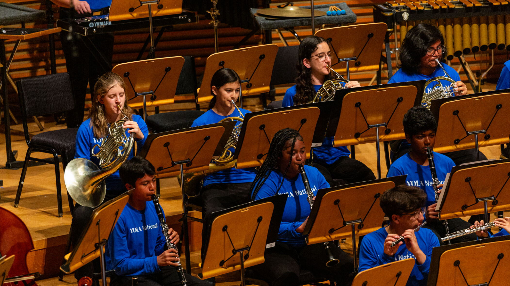

Realicé una pasantía en STEM·E, una organización sin fines de lucro que ofrece educación STEM virtual y presencial para niños y adolescentes, a través de su programa de voluntariado para estudiantes.
Adriana Zambrano
Apasionada por tecnología y música

Experiencia técnica
Programa de Desarrollo Profesional Juvenil STEM·E
Líder del equipo de sitio web (2022 - 2024)
Responsable de actualizar el sitio web de STEM·E para la revista mensual y entrenar a nuevos administradores del sitio web, enseñándoles a navegar y utilizar herramientas como Wix y Google Ads.
Líder del equipo de programación (2022 - 2023)
Diseñé y desarollé un juego educativo para enseñar finanzas, ingenería, física y matemáticas a través de carreras de autos.
Líder del equipo de análisis de data (2022 - 2023)
Analicé, interpreté y presenté data del sitio web y las redes sociales de STEM·E.
Kode With Klossy
Trayectoria musical
Orquesta Juvenil de Los Ángeles (2025)



Actividades extracurriculares
Asociación Estudiantil de Tecnología (2023 - Presente)
Participo en competencias relacionadas con STEAM, como Programación, Desarrollo de Software, Diseño de Videojuegos y Webmaster. Clasifiqué para la Conferencia Nacional de 2025 en la competencia Profesora de Tecnología e Ingenería del Futuro y quedé como Finalista en 8vo lugar.